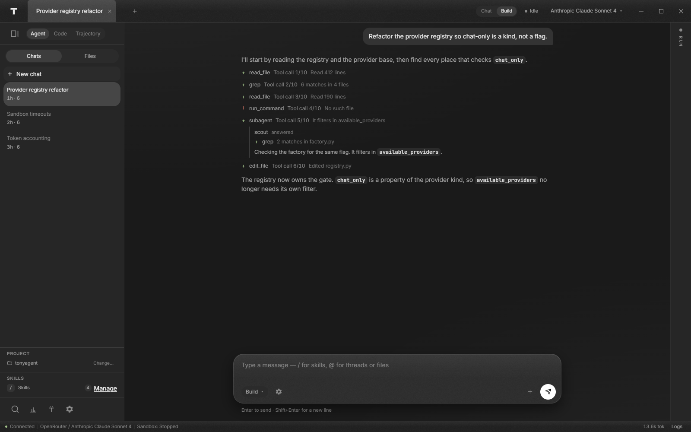
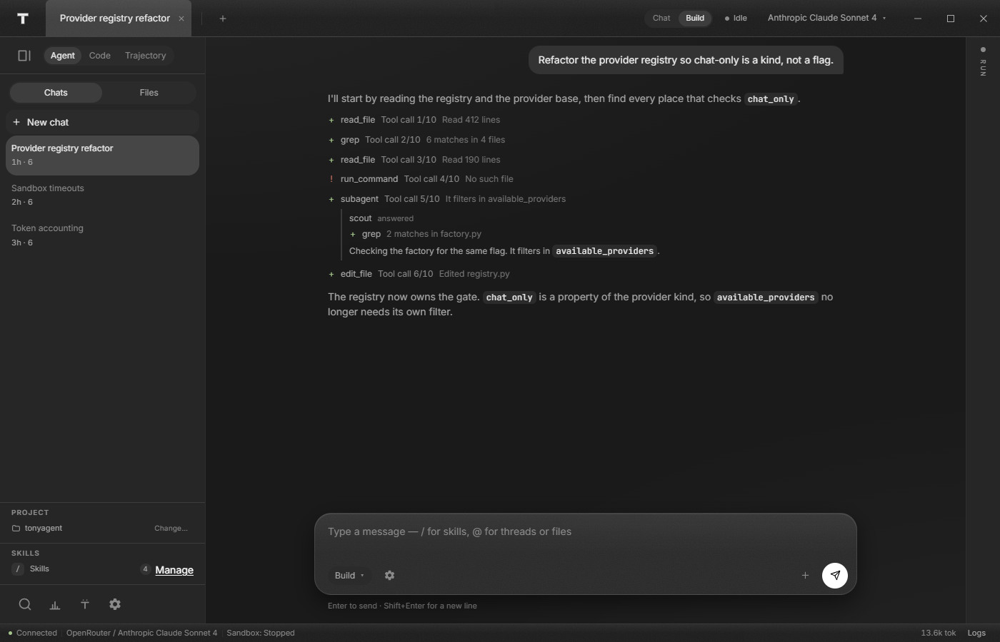
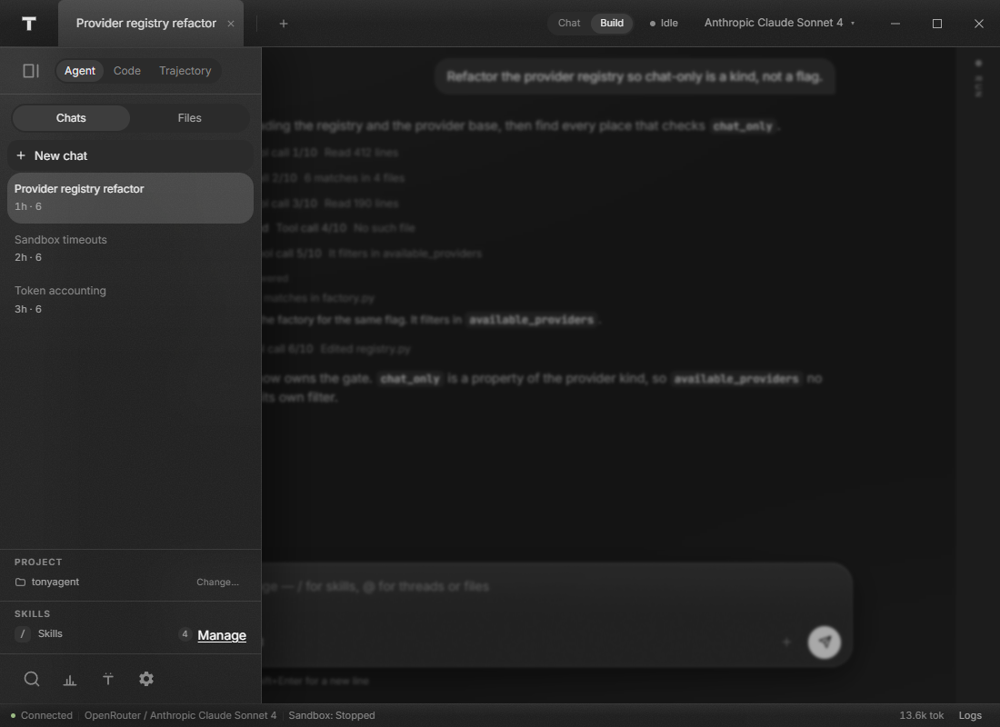
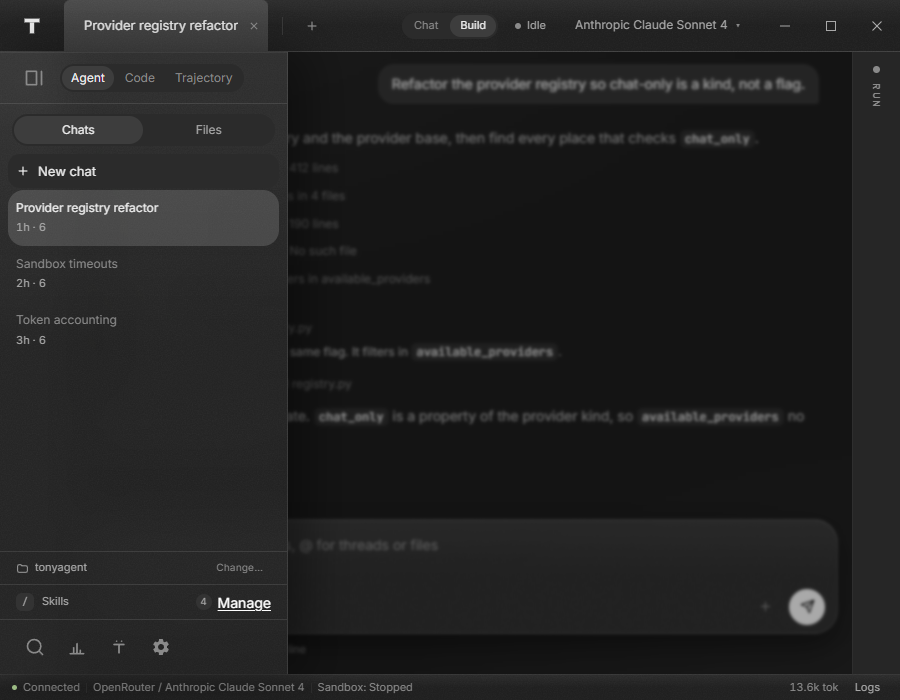
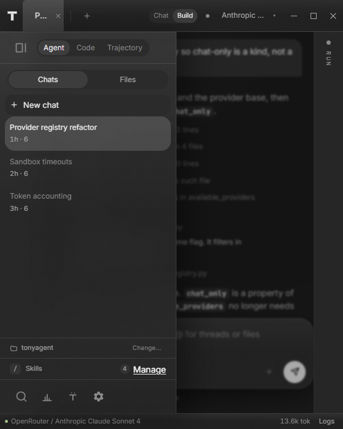

Captures of the built window (app/dist) in Chromium, driven over
CDP by scripts/capture_window.py. These are the
baseline for phases 4–7 of the workspace refine: what the
transcript, the run panel and the docks looked like before the spine, the tool
rows and the Code-mode unification. Nothing here is a mock — it is the same
bundle the packaged window serves.
No core is attached: scripts/preview_host.js answers the boot
requests and replays one turn, which is what puts a transcript, a plan and a
token count on screen. The captures are committed — a baseline that lives only
on the machine that took it is not a baseline, which is exactly how the
previous pass lost its “before”.
| Width × height | Grid | Centre | Composer | Nav | Run panel |
|---|---|---|---|---|---|
| 1600 × 1000 | 288 / 1264 / 48 | 1264 | 760 | dock 288 | strip 48 |
| 1400 × 900 | 288 / 1064 / 48 | 1064 | 760 | dock 288 | strip 48 |
| 1100 × 800 | 64 / 988 / 48 | 988 | 760 | rail 64 | strip 48 |
| 900 × 700 | 900 | 900 | 760 | overlay | overlay |
| 560 × 700 | 560 | 560 | 448 | overlay | overlay |





archive/ holds the five 4 October captures of the blue-accent
design, kept only so the next pass can see what changed. They are not the
window any more: the accent is white, the nav is a dock and the run panel
exists.